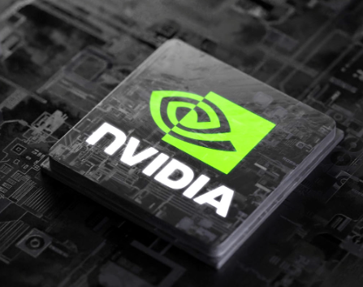
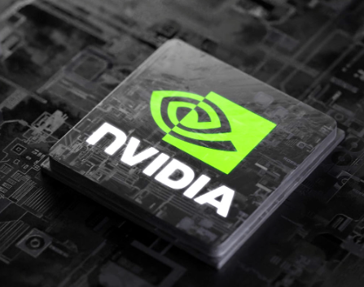

Arquitectura NVIDIA Blackwell
La Plataforma Definitiva para Jugadores y Creadores
 

- Núcleos Tensor de 5.ª Generación
Máximo Rendimiento de la IA con FP4 y DLSS 4
- Nuevos Multiprocesadores de Transmisión
Optimizados para el Sombreado Neuronal
- Núcleos RT de 4.ª Generación
Desarrollados para la Geometría Mega
La arquitectura Blackwell, que lleva el nombre del matemático David Blackwell, introduce varias mejoras significativas:
Proceso de Fabricación: Las GPUs Blackwell se fabrican en un proceso personalizado de 4N de TSMC.
Memoria GDDR7: La serie RTX 50 es la primera en utilizar memoria GDDR7, que ofrece una mayor velocidad y un mayor ancho de banda en comparación con la GDDR6X de la generación anterior.
La RTX 5090, por ejemplo, cuenta con hasta 32 GB de VRAM GDDR7.
RT Cores (Núcleos de Ray Tracing): Utiliza la 4ª Generación de RT Cores, con una tasa de intersección de rayos y triángulos duplicada (8x por núcleo) en comparación con Ada Lovelace.
Tensor Cores (Núcleos de IA): Implementa la 5ª Generación de Tensor Cores, con soporte optimizado para cálculos de IA, incluyendo la nueva precisión FP4, que permite cuadruplicar el rendimiento en IA en comparación con Ada Lovelace en la precisión anterior FP8.
DLSS 4 y Funciones de IA: La serie introduce DLSS 4, que incluye la nueva tecnología Multi Frame Generation para aumentar las tasas de cuadros por segundo hasta 8 veces más que el renderizado tradicional. También presenta Reflex 2 con Frame Warp para reducir la latencia.
Rendimiento y Eficiencia
Blackwell tiene un fuerte énfasis en la eficiencia energética y el rendimiento por vatio, logrando un mejor desempeño con un menor consumo de energía por cuadro en comparación con la Serie RTX 40. El aumento del rendimiento bruto se logra mediante:
Mayor Eficiencia por Vatio: Mejor utilización de núcleos y diseños térmicos mejorados.
Tecnologías de IA: DLSS 4 reduce la carga de trabajo de la GPU al generar cuadros por IA, lo que aumenta la tasa de FPS con un menor consumo.
Mejoras Arquitectónicas: Se duplica el ancho de banda INT32 y el rendimiento en ciertas cargas de trabajo en comparación con Ada Lovelace.
Si bien el salto en el rendimiento de rasterización (renderizado tradicional sin IA) puede no ser tan drástico como en generaciones anteriores, las mejoras se concentran en las capacidades de Ray Tracing y, sobre todo, en las cargas de trabajo de IA. La nueva arquitectura está diseñada para la IA generativa, lo que la convierte en el "motor de la nueva revolución industrial".